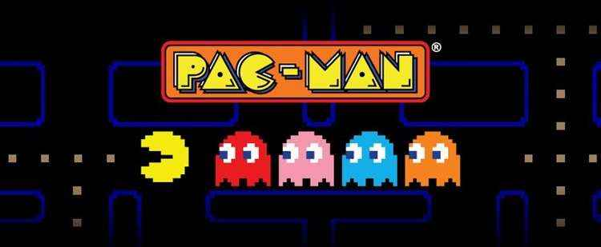

Super Mario Bros e os Clássicos
Provavelmente você já jogou ou ouviu falar de Super Mario, Zelda ou Pac-Man, mas talvez não saiba algumas curiosidades que fizeram desses jogos verdadeiros ícones da história dos videogames. Acompanhe nosso portal e descubra fatos divertidos e interessantes sobre cada título.
O Início do Mario
O encanador mais famoso do mundo surgiu em 1981 no jogo Donkey Kong, criado pelo designer Shigeru Miyamoto. Inicialmente chamado de “Jumpman”, Mario ganhou seu nome em homenagem ao proprietário do depósito onde a Nintendo of America estava armazenando equipamentos.
Mario foi criado para ser simples, mas reconhecível mesmo em telas com baixa resolução, com cores e traços que ajudassem a identificar rapidamente o personagem.
O Surgimento de Zelda
A ideia de Zelda surgiu de Shigeru Miyamoto, inspirado em suas aventuras pela natureza durante a infância. O jogo trouxe conceitos inovadores de exploração e aventura para a época, criando um gênero totalmente novo no mundo dos games.
A princesa Zelda, que dá nome à série, nunca é a protagonista jogável. O jogador assume o papel de Link, o herói que deve salvar Hyrule e derrotar Ganon.
Pac-Man e o Fenômeno Cultural
Criado em 1980 por Toru Iwatani, Pac-Man foi pensado para atrair o público feminino também. O design do personagem foi inspirado em uma pizza sem uma fatia, e rapidamente se tornou um ícone cultural do entretenimento.
Pac-Man não era apenas um jogo; virou símbolo da cultura pop, com músicas, brinquedos e desenhos animados.